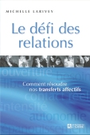
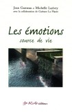
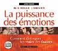
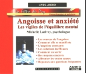
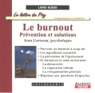
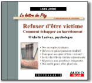
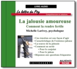
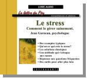

1828, rue de la Visitation
Montréal, Qc, CANADA
H2L 3C4
Tél.: (514) 271-8737 -- Fax: (514) 274-8097
courriel:
Nos publications:
|
Le défi des relations Comment résoudre nos transferts affectifs Par Michelle Larivey  Septembre 2004 Éditions de l'homme |
Comment résoudre nos transferts affectifs
Par Michelle Larivey, psychologue
Comment en revenir plus fort
Par Jean Garneau et Michelle Larivey, psychologues
avec les collaborations de
Gaëtane La Plante, Karène Larocque et Bruno Roberge
source de vie
Par Jean Garneau et Michelle Larivey, psychologues
avec la collaboration de Gaëtane La Plante
 ISBN 2-921693-55-0 © 2000 272 pages 29.00$ CAN |
"Le message de fond est que la santé mentale est à la portée des personnes qui parviennent à apprivoiser leurs émotions. Les fausses idées concernant le monde des émotions sont dénoncées. Le lecteur est guidé dans une démarche; il découvre jusqu'à quel point ses émotions sont ses alliées dans la construction qu'il fait de lui-même à travers ses choix personnels. Il trouve dans ce livre des points de repère précis pour laisser toute la place à ses émotions sans être envahi par elles." Yves St-Arnaud, Ph.D. (professeur titulaire, Université de Sherbrooke) |
Poèmes humanistes
Par Michelle Larivey, psychologue-poète

ISBN 2-921693-54-2 © 2000 88 pages 16.00$ CAN |
Souvent,
c'est un langage imagé qui semble le plus approprié pour rendre avec
justesse les nuances, les subtilités, les éclats et l'intensité des
drames humains que son travail quotidien l'amène à partager. Extrait de la préface - "J'invite chacun à venir à la fête de tous ces mots, je vous invite vous lecteur à venir, à l'émotion permise, à oser traverser la criante faim de ne pouvoir se dire, à emprunter à votre façon tel ou tel poème pour l'offrir à votre mémoire au-delà des murmures du silence et bâtir ainsi votre propre parole" (Jacques Salomé, mai 2000 en Provence) |
Comment distinguer les vraies des fausses
Par Michelle Larivey psychologue
 Les éditions de l'Homme, © 2002 ISBN 2-7619-1702-2 334 pages, 26.95 $can |
Préface de
Jacqueline C. Prud'Homme, t.s.
psychanalyste, et thérapeute familiale "Le lecteur qui s'aventurera ici sera récompensé, car éclairé sur lui-même. Il se sentira pris dans une histoire, la sienne, pleine de rebondissements, de secrets à décrypter. Bref, à cette lecture, il se sentira intéressé, impliqué, vivant. Michelle Larivey partage ce qu'elle sait avec générosité. Elle réussit à mettre à la portée de tout le monde un univers riche, complexe, en le rendant accessible et passionnant sans pour autant laisser entendre que ce travail personnel «guidé» peut remplacer une psychothérapie." (Extrait de la préface) |
 |
en livre-audio ISBN : 2-89558-109-6 |
En collaboration avec COFFRAGANTS
Les titres déjà parus
 ISBN 1-894980-05-0 © 2003 75 min. 19,95$ CAN |
ISBN 1-894980-12-3 © 2003 75 min. 19,95$ CAN |
 ISBN 1-89558-166-5 © 2003 75 min. 18,95$ CAN |
 ISBN 2-89558-172-X © 2003 60 min. 18,95$ CAN |
 ISBN 2-89558-184-3 © 2004 60 min. 18,95$ CAN |
 ISBN 1-89558-195-9 © 2004 75 min. 18,95$ CAN |
Cliquez sur l'image pour plus de détails
{kind=link}